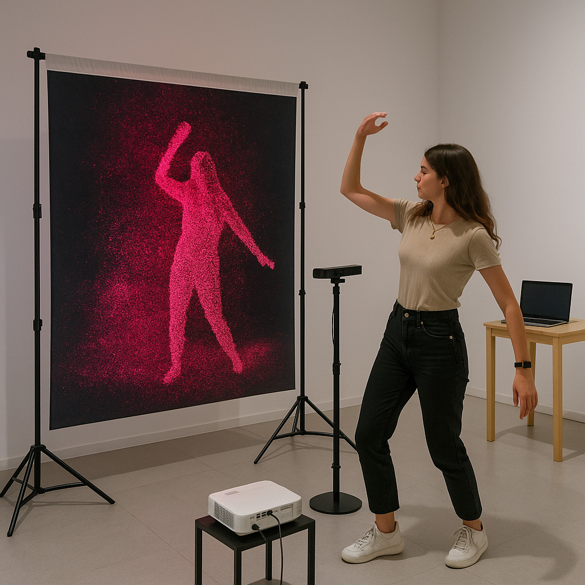
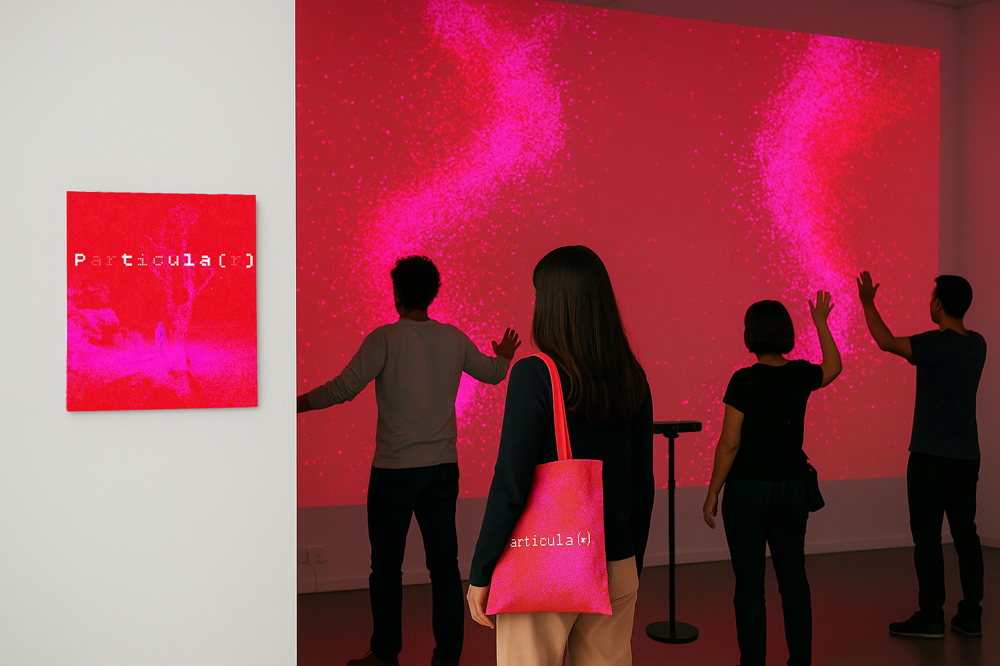
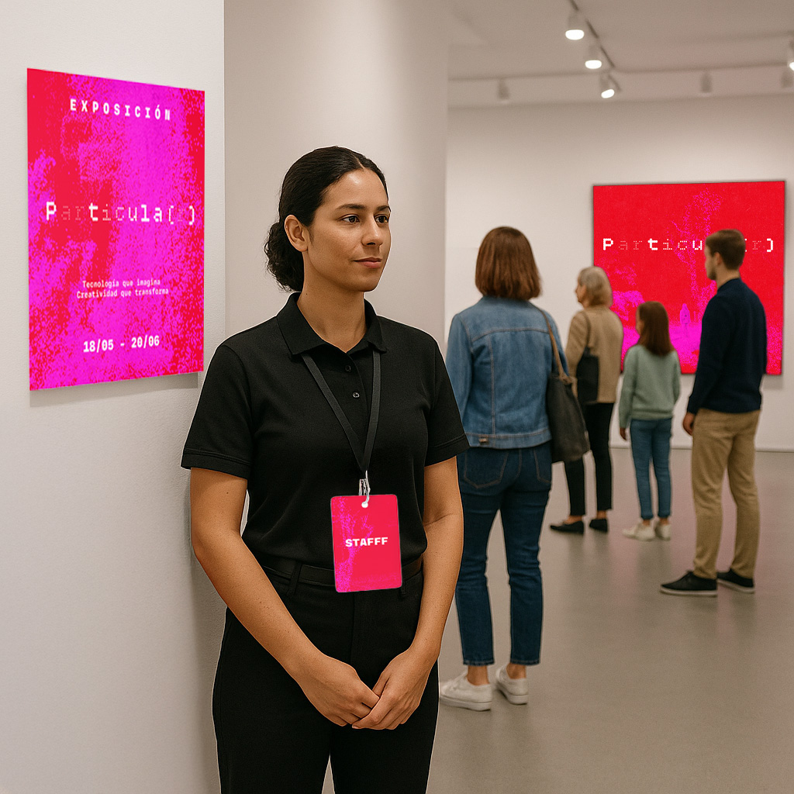

Esta instalación transforma tu rostro en una nube de partículas.
Frente a ti, una imagen que se compone, se dispersa, se recompone.
No hay filtros. No hay verdades. Solo una visualización en tiempo real de lo que quizás no puedas controlar:
Tu reflejo digital.
¿Es la tecnología una herramienta de expresión o un medio de control?
¿Te ves reflejado… o interpretado?
¿Qué ocurre cuando el código reemplaza al cuerpo?



Lee más sobre la idea detrás del proyecto
Esta instalación nace desde la necesidad de repensar cómo usamos la tecnología cuando creamos.
En un contexto saturado de herramientas, pantallas y algoritmos, Particula(r) propone una pausa: una experiencia que no deja rastro, que no captura, que no cuantifica.
Solo transforma, en tiempo real, por un momento.
¿Puede la tecnología servir a lo creativo sin reemplazarlo?